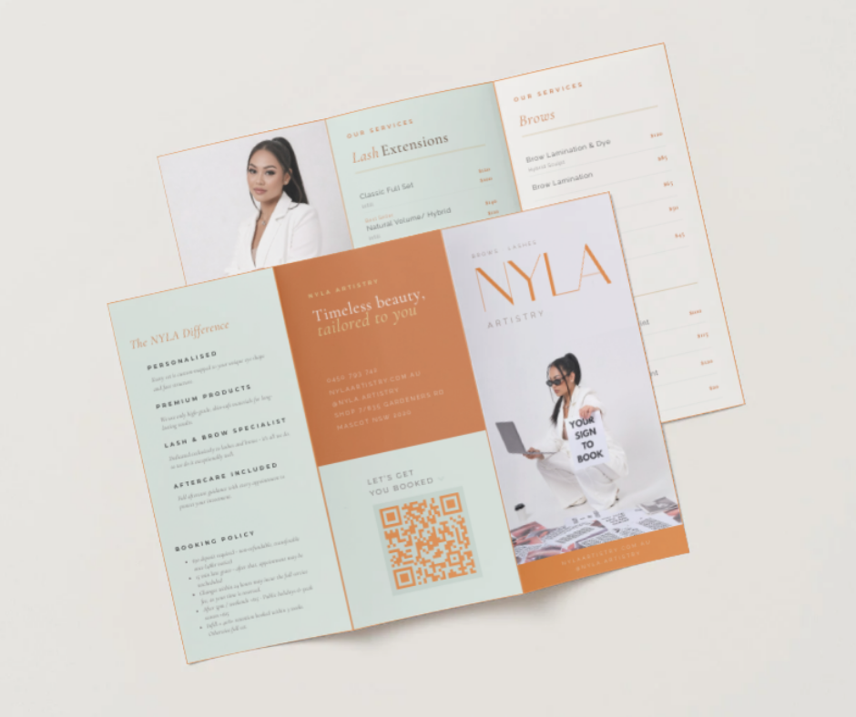

Website Experience
The website redesign gave Nyla Artistry a more polished and trustworthy digital presence. The focus was on clearer treatment information, better hierarchy, and a cleaner path from discovery to booking.
The final direction paired the actual Nyla palette with Cormorant and Raleway to make the brand feel elegant, feminine, and more established without losing usability on mobile.

Add assets/Web & App.png to display the website and booking mockup in this section.
Illustrated Policy & Aftercare Guide
The custom illustrated guide turned policy and aftercare information into something clients would actually read. Instead of dense text, the information was reframed through a playful pop-art style that stayed on-brand and easy to absorb.
This added personality to the identity while reducing confusion around deposits, cancellations, preparation, and aftercare.


Brand Collateral & Print Design
The supporting print pieces extended the Nyla identity beyond the website and helped make the client experience feel more cohesive across digital and physical touchpoints.
Clean layout, refined typography, and QR-linked booking collateral made the materials feel premium while still practical.
